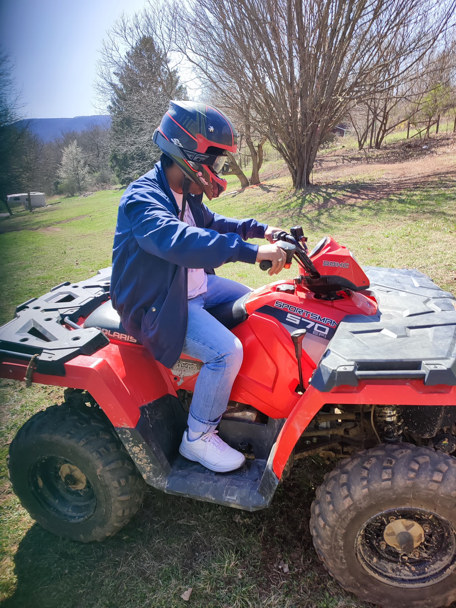

Riding
I can still clearly recall the day I received my first bike. When I was 7 years old, I received. It was a four-wheeled bike. It had a red and black color scheme. I was so fascinated by bikes that I took a lot of lovely pictures as a keepsake of my early years.
